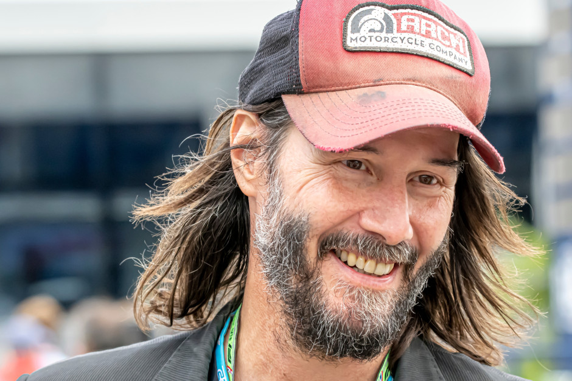

ARTYKUŁY
Keanu Reeves po wielu tragediach w końcu odnalazł szczęście. Ulubieniec widzów w pięknych słowach o ukochanej
Keanu Reeves skończył 60 lat! Oto sześć faktów o uwielbianym aktorze
Love stories: Keanu Reeves i Jennifer Syme
Keanu Reeves – najfajniejszy aktor świata w nowym filmie „John Wick 4”
Keanu Reeves wyznał, że ciągle myśli o śmierci